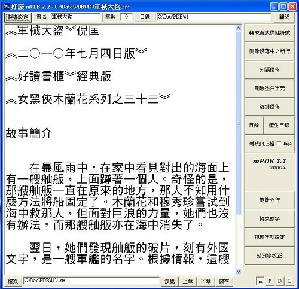
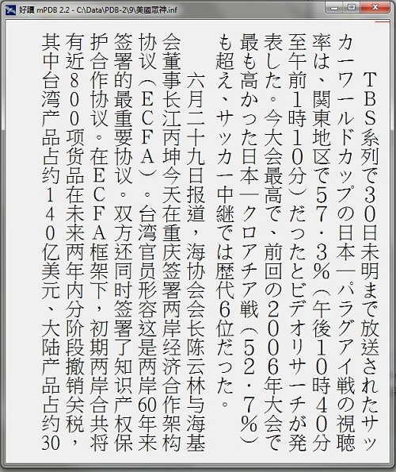

|
|
|
|
|
|
好讀製書程式 mPDB 2.2 周劍輝
免費 mPDB22.zip [下載] 2010/7/2 (436K) 2010/7/7
1) 請先在PC或隨身碟上建一個 mPDB 目錄。
2) 將下載的 mPDB22.zip 解壓縮至 mPDB 目錄。
3) 解出的檔案只有兩個：mPDB.exe 及 錯別字.txt。
4) mPDB.exe 立馬可用，沒有其他囉唆的安裝程式。
mPDB 2.2 主要新增功能：使用 Unicode
- mPDB 2.1 使用Big5碼，輸入Unicode會變成？，本版不會。
- 任何語系的Windows都能使用本版。
- 修改了設定檔的使用介面。
- 若您熟悉2.1版，使用本版很容易，這裡不再重複說明。
- 新手請先參看mPDB 2.1的說明。
- 原PDB檔是使用Big5碼，本版新增uPDB檔，是使用Unicode規格。
- [轉成PDB檔]預設是uPDB檔，您也可選擇產生PDB檔。
- 本版可讀PDB及uPDB檔。
- 使用本版擷取出的文字檔是Unicode規格。

過渡期的痛苦
- mPDB 2.2 產生的uPDB檔，目前只有mPDB 2.2能顯示。
- 若您製作的書是純Big5碼，仍可以使用mPDB 2.1製作。
- 若您製作的書含Unicode，最好使用mPDB 2.2製作，才不會缺字。
- 目前幾乎所有的作業系統都支援Unicode，好讀網站的新書更新，2010/7/1起，都會使用本版產生的PDB檔及uPDB檔。
- 當本版穩定後，會先改寫好讀網頁版及PC版，讀uPDB檔。
- 當全面Unicode化之後，唯一的痛苦是Palm機種，因不支援Unicode，將無法閱讀uPDB檔。目前還想不出較好的解決方法，屆時再說吧。
機子及作業系統越來越多，我不可能逐一撰寫閱讀軟體，因而特將uPDB及PDB檔詳細規格公布如下，方便有興趣、有時間、能寫程式的讀友，為新機種撰寫閱讀軟體。
- PDB是源自Palm作業系統的一個單一檔案，簡易資料庫。
- 每一個PDB檔含N筆不定長度的資料(record)。
- PDB檔最前面當然要有個Header，定義本資料庫的特性。
- 因資料長度非固定，無法計算位置。所以Header之後，是各筆資料所在的位置，可以用來讀資料及計算每筆資料的長度。
- 之後，就是一筆一筆的資料，沒什麼大學問可言。
- 檔案的前78個bytes，是Header[0..77]：
- Header[0..34]舊版是放書名，新版是放作者。可以不理。
- Header[35]是2，舊版是1。可以不理。
- Header[36..43]是為Palm而加的兩個日期，可以不理。
- Header[44..59]都是0。可以不理。
- Header[60..63]是"BOOK"。可以不理。
- Header[64..67]是判別的關鍵，PDB是"MTIT"，uPDB是"MTIU"。
- Header[68..75]都是0。可以不理。
- Header[76..77]是record數 = N (章數) 加2 (目錄及書籤)。
- 每筆資料的起始位置及屬性，依Palm的規格是8個bytes，前4個bytes是位置，後4個bytes是0。一共有 (N+2) * 8 bytes。
- 第一筆資料定義書的屬性，是8個空白字元、書名、章數及目錄：
- (PDB檔)
8個空白btyes，可以不理；
之後接書名是Big5碼，後接三個ESC(即27)；
之後接章數(ASCII string)，後接一個ESC；
之後接目錄，各章之標題是以ESC分隔。
- (uPDB檔)
8個空白btyes，可以不理；
之後接書名是Unicode碼，後接三個ESC(即27,0)；
之後接章數(ASCII string)，後接一個ESC (27, 0)；
之後接目錄，各章之標題是以CR(13,0) NL(10,0) 分隔。
- 再來是N筆資料，每筆是一章的內容，PDB檔是Big5碼(是null-terminated string，最後一個byte是0)，uPDB檔是Unicode碼。
- 第N+2筆資料是書籤，預設是-1。可以不理。
撰寫好讀閱讀軟體
因為一次只顯示一章，我是自updb/pdb檔抓該章排版。仔細說是：
- 將第n章內容讀入一個string (我是用C)。
- 計算共有幾頁，儲存每頁的第一個字的位置 (瞬間計算)。
- 要顯示第k頁，則從該頁的第一個字開始排到該頁的最後一個字。
- 全部是即時計算，即使使用Palm速度也快到沒感覺。
段落之間有個空白分行，排版時我是減半空白行的寬度，比較好看。網頁版較難處理，只好暫時 (很久了)，先將空白分行拿掉。實體書多半無空白分行，省紙張，螢幕排版則多加半行，不致密密麻麻，眼睛比較舒適。

Windows 7 英文版上的含日文及簡體中文的預覽示範畫面
|
|
|
|
|
|
|
|
| 搜尋好讀 |
|
好讀第17年了。
有好讀真好，有你也真好。但不知遍及各地的你，究竟有多少。若你從未或很久沒贊助過好讀，請按這裡，贊助好讀美金或人民幣十元，讓我知道你存在。
11/25香港 Dennis C
幾年前由朋友介紹得悉好讀，多年來在旅途中它都帶給我很多樂趣。香港地方狹小，不少書都因地方問題而送人或丟棄，好讀卻帶給了我很多閲讀的方便、亦節省了儲存的位置。衷心多謝各位工作仝人！
11/19 美國紐約 June
發現好讀幾年了，但現在才發現這好讀留言板。抱歉呢，理應更早道謝。身在海外，要看一本中文書不是易事。書店售書種類少，價錢高；圖書館借書種類更少。幸好發現好讀網，可以一解書癮。衷心感謝所有有心人上載和校對。
11/17 大陸 Shirley
偶然發現好讀網這塊寶地真的很驚訝，網絡上有這樣安靜舒適的地方可以閱讀電子書，對我這種資金短缺的學生真的很意外很開心！
11/16 香港 chair chun wai
因為買了Kindle的緣故，所以才發現"好讀"這個地方。感謝"好讀"一直的更新和提供書本給大家。感謝感謝
11/15 香港 mike chan
我認識好讀是因爲kindle。那時中學買了kindle，需要找找電子書，因此在網上發現了好讀。對於繁體字kindle用家，這是個大福音！
11/13 大陸 BerthaR
今天因為Kindle的緣故找書，才發現好讀這個地方。感覺是一方淨土，公益地為書友們獲取知識省下了不少財力，節省了大家的時間：）目前我只是個高中生，提供的也只有十塊錢而已啦。十七年的好讀真是令人敬佩！希望你們知道我的感謝，還有知道更多人的感謝！
11/9 香港 MJ
從小喜愛看書，看書人也許都知道要管理保存書本是不容易的（尤其香港的地方空間更有限）。今年開始嘗試電子書，看看能否接受。因為好讀網的海量書本，小弟所喜愛的黃易＋衛斯理，還有準備開始看的金庸也不用愁了。感謝好讀！
>> 更多
|
|
|